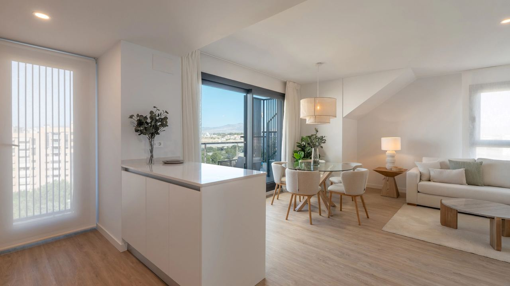
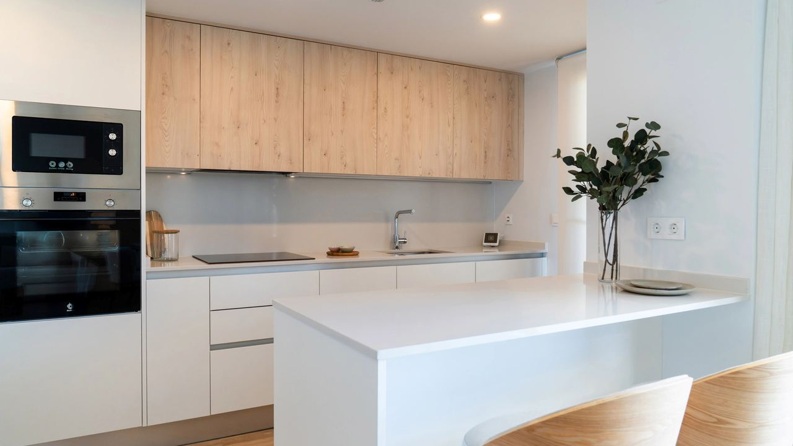
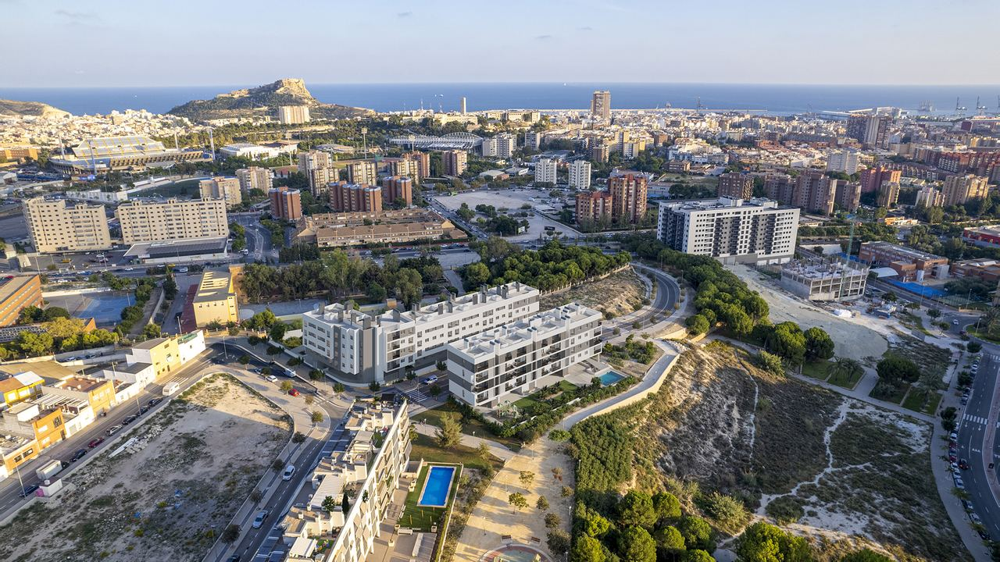
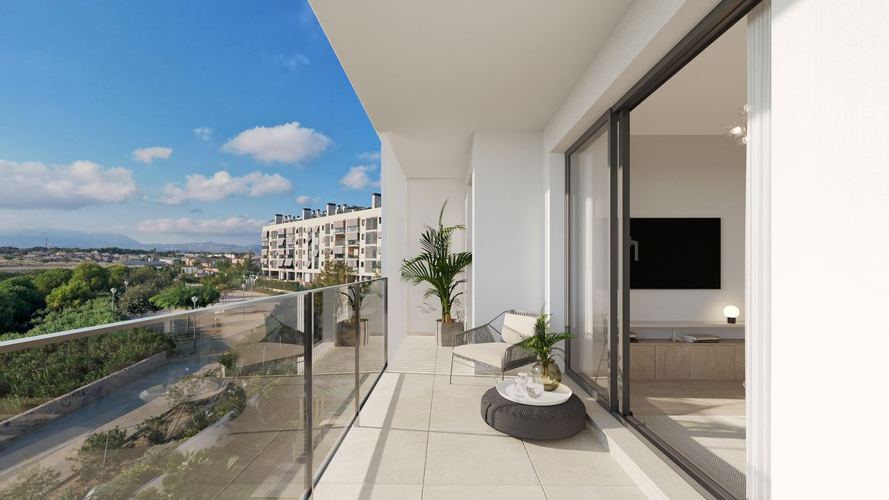

Ser propietario en España · Alquilar
Alquiler de larga duración en España – lo que debe saber el propietario en 2026
 Por Aleksandra Kobus · · actualizado · 4 min de lectura
Por Aleksandra Kobus · · actualizado · 4 min de lectura

En resumen: El alquiler de vivienda habitual se rige por la Ley de Arrendamientos Urbanos (LAU). El inquilino puede quedarse hasta 5 años (7 si el arrendador es una empresa) aunque el contrato sea de un año, y puede irse a los 6 meses avisando con 30 días. La fianza es de un mes, más un máximo de dos meses de garantías adicionales, y debe depositarse en el organismo autonómico. Las subidas anuales están limitadas por el IRAV del INE (en torno al 2,5 % en 2026). Los honorarios de la inmobiliaria los paga el arrendador. Los no residentes de la UE tributan un 19 % sobre el neto; el resto, un 24 % sobre el íntegro.
El alquiler de larga duración es la alternativa tranquila al vacacional: un inquilino, ingresos estables, menos desgaste y sin licencia turística. La demanda en la Costa Blanca y la Costa del Sol es alta, de familias locales, teletrabajadores y personas que se mudan a España.
La ley protege bastante al inquilino, así que conviene conocer las normas antes de firmar. Así funciona un alquiler de larga duración en 2026.
El contrato: duración y preaviso
El alquiler de una vivienda como residencia habitual del inquilino se rige por la Ley de Arrendamientos Urbanos (LAU). Las claves:
- Duración mínima. Puede firmar por un año, pero el inquilino puede prorrogar año a año hasta 5 años, o 7 si el arrendador es persona jurídica.
- Prórroga tácita. Si nadie avisa al final, el contrato se prorroga por anualidades hasta tres años más.
- Desistimiento del inquilino. A partir de los 6 meses, con 30 días de preaviso. Se puede pactar una indemnización de una mensualidad por cada año que falte.
- Necesidad del arrendador. Solo si consta en el contrato, para el arrendador o familiares cercanos, tras el primer año y con dos meses de preaviso.
- Venta. El inquilino tiene derecho de adquisición preferente salvo que se excluya en el contrato, y el arrendamiento suele continuar con el nuevo propietario.
Los contratos de temporada (por ejemplo, un invierno o una estancia por trabajo o estudios) no tienen estas protecciones, pero deben responder a una necesidad temporal real.
Fianza, actualización de la renta y honorarios
- Fianza: una mensualidad, que debe depositarse en el organismo de vivienda de la comunidad autónoma.
- Garantías adicionales: como máximo dos mensualidades más, en depósito o aval bancario. Muchos propietarios contratan además un seguro de impago.
- Actualización: una vez al año y solo si el contrato lo prevé. Desde 2025 el límite es el Índice de Referencia para la Actualización de Arrendamientos (IRAV) del INE, en torno al 2,5 % en otoño de 2026.
- Honorarios: desde 2023 los gastos de inmobiliaria y de formalización del contrato los paga el arrendador.
Algunas comunidades tienen zonas tensionadas con límites de renta. A otoño de 2026 no hay ninguna en la Comunitat Valenciana ni en Andalucía.
Preparar la vivienda y encontrar inquilino

Antes de alquilar necesita:
- el certificado de eficiencia energética, que debe figurar en el anuncio,
- la licencia de ocupación o cédula de habitabilidad que exija la comunidad,
- un seguro de hogar y los suministros en regla (el contrato indica quién los paga).
Los inquilinos de viviendas de calidad esperan fibra óptica, aire acondicionado y calefacción, cocina equipada y, en las villas, piscina y jardín cuidados. Buenas fotos y una descripción clara ayudan.
Revise bien a cada candidato: contrato de trabajo o justificante de ingresos, últimas nóminas o declaraciones, documento de identidad y referencias. Firme al inicio un inventario con fotos.
Impuestos sobre el alquiler

| Propietario | Impuesto | Deducciones |
|---|---|---|
| No residente de la UE, Noruega o Islandia | 19 % (modelo 210) | gastos como IBI, comunidad, seguro, reparaciones, intereses y amortización del 3 % de la construcción |
| No residente de otros países (Latinoamérica, EE. UU., Reino Unido, Suiza…) | 24 % (modelo 210) | ninguna, tributa sobre el ingreso íntegro |
| Residente fiscal en España | IRPF progresivo | los mismos gastos y una reducción del 50–90 % del rendimiento neto si alquila como vivienda habitual |
Muchos no residentes tributan también en su país, con deducción del impuesto español según el convenio. Nuestra guía residente vs no residente explica la diferencia.
Gestionar desde fuera
Si vive fuera de España, un gestor local puede buscar y verificar inquilinos, redactar el contrato, depositar la fianza, cobrar la renta, ocuparse de las reparaciones y presentar sus declaraciones de no residente. Suele cobrar un porcentaje de la renta.
El alquiler de larga duración encaja con quien busca ingresos estables y poca implicación y no necesita usar la vivienda. Si quiere pasar allí los veranos, el alquiler de temporada de invierno o el vacacional puede encajar mejor. Nuestra guía del alquiler vacacional explica esa opción.
Preguntas frecuentes
¿Cuánto tiempo puede quedarse un inquilino?
En vivienda habitual, hasta 5 años (7 si el arrendador es una empresa) aunque el contrato sea de un año, más hasta 3 años de prórroga tácita si nadie avisa.
¿Cuánta fianza puedo pedir?
Una mensualidad de fianza legal, más un máximo de dos mensualidades de garantía adicional.
¿Cuánto puedo subir el alquiler cada año?
Una vez al año y solo si el contrato lo permite. El límite es el IRAV del INE, en torno al 2,5 % en otoño de 2026.
¿Quién paga los honorarios de la inmobiliaria?
El arrendador. Desde 2023 el inquilino de vivienda habitual no paga honorarios ni gastos de formalización.
¿Necesito licencia turística para alquilar a largo plazo?
No. La licencia turística solo es necesaria para el alquiler vacacional. Para el de larga duración basta con el certificado energético y la documentación de ocupación habitual.
Compre una vivienda que se alquile bien

Le diremos qué renta obtienen viviendas similares en cada zona y le presentaremos gestores de confianza. Escríbanos para encontrar una vivienda pensada para el alquiler de larga duración.
Fuentes: BOE – Urban Leases Act (Ley 29/1994, LAU), consolidated · BOE – Housing Act (Ley 12/2023) · INE – Rental update index (IRAV)